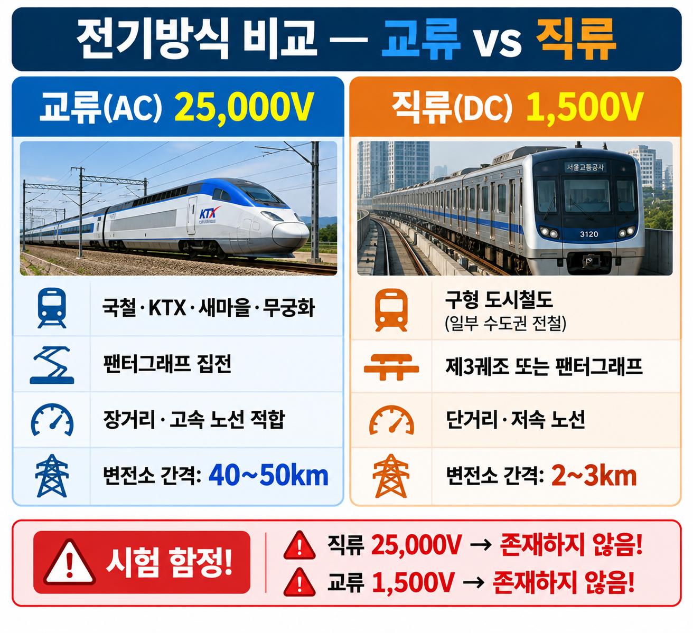
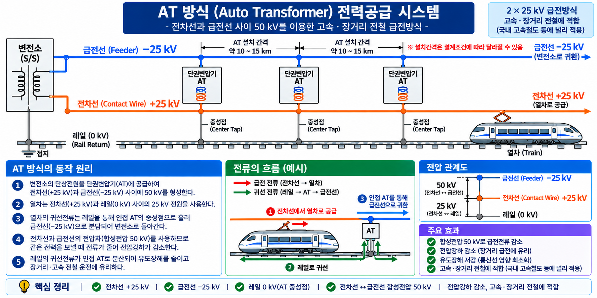

GATE 5 · PART 09 · UNIT 09-01
전력방식·급전계통
교류·직류 전기방식 비교 / 교류식 전기철도 장점 / BT급전 vs AT급전
PART 09 전기철도·전력공급
A등급
LOCAL LOCK ✅ v1.0
STATUS: FINAL PUBLISH
🎬 핵심 영상 — V-Y-07
▶ PRIMARY 영상 — 전기열차는 어떻게 움직이는가?

전기철도 전력공급·집전·구동 원리 전반. 전력방식·급전계통 이해에 필수.
§1 선행 용어
AC (교류, Alternating Current)
방향이 주기적으로 바뀌는 전류. 우리나라 전기철도 표준 방식(25,000V).
DC (직류, Direct Current)
한 방향으로만 흐르는 전류. 구형 도시철도에서 1,500V 사용.
급전 (給電)
변전소에서 전차선을 통해 열차에 전력을 공급하는 것.
귀선전류 (歸線電流)
열차 구동 후 레일을 통해 변전소로 돌아오는 전류.
통신유도장애
전철 전류가 인근 통신선에 유도 전류를 일으켜 잡음·오작동을 유발하는 현상.
변압비
변압기 1차측·2차측 전압 비율. AT급전에서 변압비 1:1 사용.
§2 전기방식 비교 — 교류 25,000V vs 직류 1,500V
SOURCE 개념09
전기방식 비교
★★★ 최빈출
| 방식 | 대표 적용 | 특징 |
|---|---|---|
| 교류 25,000V | 국철 전기철도 (KTX·새마을 등) |
점착성능 우수 / 소형이어도 대량 견인 / 변전소 간격 넓음 |
| 직류 1,500V | 구형 도시철도 | 터널 단면 작음 / 통신유도장애 적음 |
⚠️ 함정 ① — 직류 25,000V → 존재하지 않음! 교류 25,000V가 국철 표준.
⚠️ 함정 ② — "교류가 통신유도장애가 적다" → 틀림. 통신유도장애가 적은 것은 직류다.
⚠️ 함정 ② — "교류가 통신유도장애가 적다" → 틀림. 통신유도장애가 적은 것은 직류다.
★ 기억법: 교류 = 25,000V (高電壓) · 직류 = 1,500V (低電壓)
교류 = 변압기로 전압 변환 쉬움 → 변전소 간격 넓게 설치 가능 → 시설비 절감
교류 = 변압기로 전압 변환 쉬움 → 변전소 간격 넓게 설치 가능 → 시설비 절감

VIS-078 — 교류 25kV vs 직류 1.5kV 전기방식 비교 카드
§3 교류식 전기철도 장점
SOURCE 개념82 (일부)
교류식 전기철도 장점
★★
| 항목 | 내용 |
|---|---|
| 교류식 장점 | ① 소형으로 중량 열차 운행 가능 ② 장거리·경사 구간에 유리 ③ 전력 손실 적음 ④ 변전소 간격 넓음 (25kV 고압 → 변압 용이) |
⚠️ 함정 — "교류식은 통신유도장애가 적다" → 틀림. 교류식은 통신유도장애가 크다. 적은 것은 직류식.
★ 교류 25kV → 고전압 송전 → 같은 전력을 더 작은 전류로 전달 → 전력 손실↓ · 소형으로도 대출력 견인 가능
§4 BT급전 vs AT급전
SOURCE 개념95
BT급전 vs AT급전
★★★ · 고난도
| 구분 | 명칭 | 원리 | 특징 |
|---|---|---|---|
| BT급전 | 흡상변압기 (Booster Transformer) |
귀선전류를 레일→귀선선(BT선)으로 흡상 | 통신유도장애 감소 급전거리 짧음 |
| AT급전 | 단권변압기 (Auto Transformer) |
급전선(+25kV) + 전차선(−25kV) = 합계 50kV 변압비 1:1 |
전압강하 적음 급전거리 길어짐 고속선(KTX) 표준 |
⚠️ 핵심 함정 — AT급전이 BT급전보다 전압강하 적고 급전거리 길다
→ 시험에서 "BT급전이 급전거리가 길다"로 반전시켜 출제 ← 오답
→ 시험에서 "BT급전이 급전거리가 길다"로 반전시켜 출제 ← 오답
★ 우리나라 KTX = AT급전 / 구형 전기철도 = BT급전 또는 직접급전
★ AT급전: 단권변압기를 일정 간격으로 설치 → 전차선-급전선 전압 균등 유지 → 장거리 급전에 유리
★ AT급전: 단권변압기를 일정 간격으로 설치 → 전차선-급전선 전압 균등 유지 → 장거리 급전에 유리

VIS-105 — AT급전 전력공급 시스템 (BT급전과 비교하여 학습)
§5 시험 포인트 · 함정 패턴
📌 핵심 암기 포인트
- 교류 = 25,000V / 직류 = 1,500V — 수치 혼동 절대 금지
- 직류 25,000V → 존재하지 않음
- 통신유도장애 적음 → 직류 (교류가 아님)
- 교류식 = 변전소 간격 넓음 (직류식보다)
- AT급전 = 전압강하 적음, 급전거리 길어짐
- BT급전 = 급전거리 짧음, 통신유도장애 감소 효과 있음
- KTX = AT급전
| 함정 유형 | 오답 선택지 | 정답 방향 |
|---|---|---|
| 전압 수치 교체 | "직류 25,000V가 표준" | 직류 25,000V 없음. 교류 25,000V가 국철 표준 |
| 통신유도장애 주체 반전 | "교류식이 통신유도장애 적다" | 통신유도장애 적은 것 = 직류식 |
| AT/BT 특징 반전 | "BT급전이 급전거리 길다" | 급전거리 긴 것 = AT급전 / 짧은 것 = BT급전 |
| 변전소 간격 반전 | "교류식이 변전소 간격 짧다" | 교류 = 변전소 간격 길다. 직류 = 짧다 |
📝 기출문제 (2문항)
※ 전체 문제·정답·해설이 펼쳐진 상태로 표시됩니다.
Q1
eng_id25 · SOURCE: 4.html 개념09 · R1 2024.12 공개복원
교류 전철 방식의 장점으로 옳은 것은?
- ① 변전소 간격이 직류보다 짧아 전력 공급이 안정적이다
- ② 직류 방식보다 변전소 간격을 길게 할 수 있어 시설 비용이 적다
- ③ 통신 유도 장해가 직류보다 적다
- ④ 전압이 낮아 전기 안전성이 높다
정답: ② — 교류 전철(AC): 고전압 송전 → 변전소 간격 길게 → 시설비 절감.
함정: ①은 반대(교류가 간격 길다 / 직류가 짧다), ③은 반대(통신유도장해 적은 것은 직류), ④는 반대(교류는 고전압)
함정: ①은 반대(교류가 간격 길다 / 직류가 짧다), ③은 반대(통신유도장해 적은 것은 직류), ④는 반대(교류는 고전압)
Q2
rk_ch82_15 · SOURCE: 4.html 개념82 · ch82 전기·신호
교류식 전기철도의 특징 중 장점은?
- ① 차량 구조가 간단하다
- ② 절연 이격 거리를 줄일 수 있다
- ③ 높은 견인력을 가져 소형으로도 무거운 열차를 끌 수 있다
- ④ 통신유도장해가 적다
정답: ③ — 교류식 전기철도: 고전압 송전으로 동일 전력을 더 작은 전류로 전달 → 전력 손실 적고 대출력 견인 가능 → 소형으로도 중량 열차 운행.
함정: ②는 반대(교류식은 절연 이격 거리가 넓어야 함), ④는 반대(통신유도장해는 직류가 적음)
함정: ②는 반대(교류식은 절연 이격 거리가 넓어야 함), ④는 반대(통신유도장해는 직류가 적음)